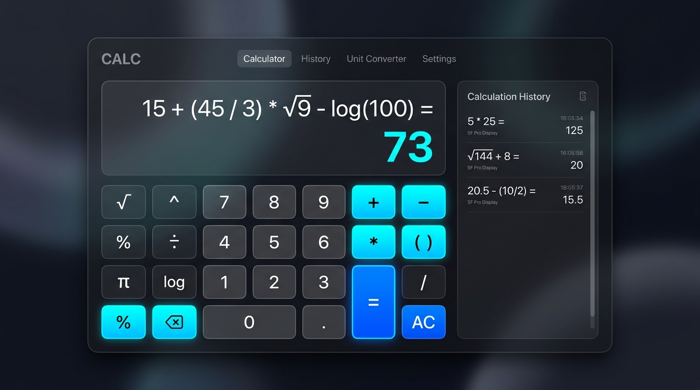

Interactive Utility Project
Kalkulator Digital Modern
Aplikasi kalkulator interaktif dengan operasi aritmatika lengkap (+, −, ×, ÷, %, negate, desimal), dukungan input keyboard fisik, panel riwayat komputasi real-time, dan feedback visual responsif.